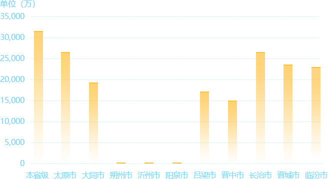
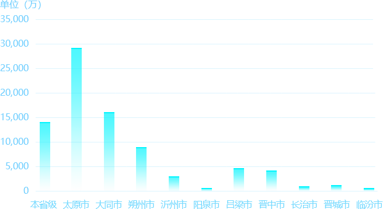
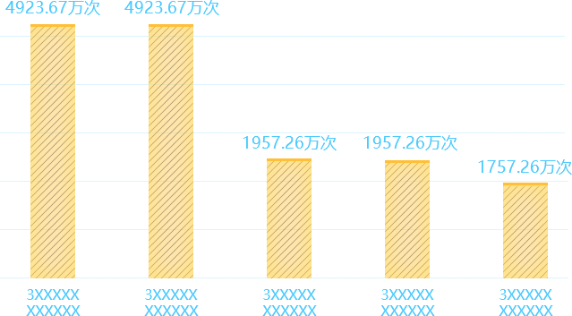

今日同步量
29,667,2742966.73
万累计同步量
7,279,955,24872.80
万
同步成功率
100%
同步流量个数排行
1.机关养老
10051952
2.全省五险
2851861
3.就业
85829
4.失业保险
30554
地市今日同步数据量

地市累计同步数据量

各地市数据量
表变化统计排行

告警信息
-
[mode3]
[目标端]loader(proc:0)[LOG]--loader(proc:0)[LOG]12-13
-
[mode3]
[目标端]loader(proc:0)[LOG]--loader(proc:0)[LOG]12-13
-
[mode3]
[目标端]loader(proc:0)[LOG]--loader(proc:0)[LOG]12-13
-
[mode3]
[目标端]loader(proc:0)[LOG]--loader(proc:0)[LOG]12-13
-
[mode3]
[目标端]loader(proc:0)[LOG]--loader(proc:0)[LOG]12-13
目标端CPU/内存/存储监控情况
40%
磁盘 --
192.167.121.21盘符总量：98.31
未使用量：91.73
已使用量：6.58
60%
磁盘 --
192.167.121.21盘符总量：98.31
未使用量：91.73
已使用量：6.58
82%
磁盘 --
192.167.121.21盘符总量：98.31
未使用量：91.73
已使用量：6.58